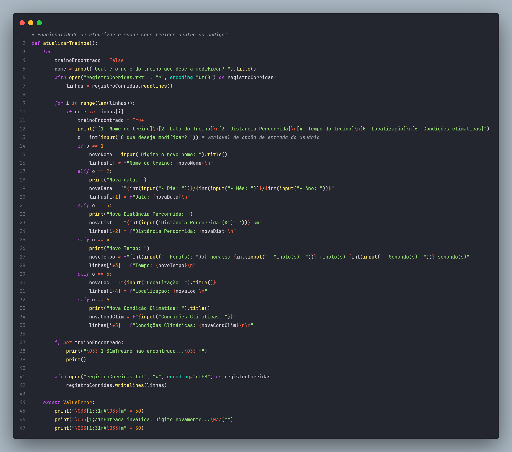

Menu interativo focado em corredores que desejam planejar e organizar seus treinos de forma prática e eficiente. Ele permite que os usuários definam metas, acompanhem seu progresso e ajustem o cronograma de treinos de acordo com seu desempenho e disponibilidade.
Função de adicionar treinosFunção de visualizar treinos

Função de atualizar treinosFunção de remover treinosCódigo principal